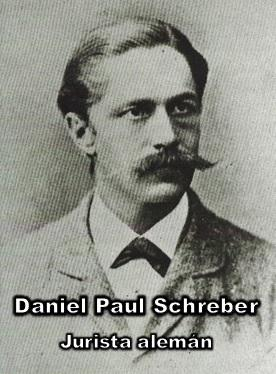

Desde la perspectiva de la psiquiatría moderna, y más aún desde una postura laica, el llamado caso Schreber es un ejemplo muy útil para comprender hasta qué punto el cerebro humano, bajo determinadas condiciones patológicas, es capaz de construir sistemas teológicos completos, coherentes y aparentemente profundos, sin que exista detrás ninguna «revelación», sino más bien un trastorno mental.


Se trata de lo ocurrido al jurista alemán Daniel Paul Schreber (1842-1911), presidente del Tribunal Supremo de Apelaciones de Dresde, Alemania, un hombre culto, racional y sin especial inclinación religiosa en su vida previa, quien a partir de los cincuenta años, sufrió graves episodios de psicosis paranoide que lo llevaron a ser internado durante largos períodos en hospitales psiquiátricos.
Resulta que durante esas crisis, Schreber desarrolló un sistema delirante extremadamente complejo, que él mismo describió en un libro publicado en 1903: «Memorias de un enfermo de nervios». Y en 1911 Sigmund Freud analizó esta obra en su famoso estudio «Puntualizaciones psicoanalíticas sobre un caso de paranoia», convirtiéndolo en uno de los casos clínicos más importantes de la historia del psicoanálisis.
Freud, sin embargo, nunca trató personalmente a Schreber, sino que se basó exclusivamente en el texto autobiográfico escrito por aquel hombre psicótico, que creía estar viviendo acontecimientos de alcance cósmico y divino. Pero lo más impresionante del caso no es sólo la presencia de alucinaciones o ideas persecutorias, sino la construcción de un sistema mítico-religioso tan completo. Podríamos resumir esta «teología» delirante de Schreber en cinco conceptos principales:
Schreber estaba convencido de que «Dios» se comunicaba directamente con él mediante ciertos «rayos divinos» que actuaban sobre sus nervios.
Elaboró una teoría según la cual el alma y los nervios eran la misma cosa, y «Dios» era una especie de ser hecho de «nervios puros e inmortales».
Afirmaba escuchar cierto «lenguaje de los nervios», una lengua sagrada mediante la cual lo divino se dirigía a él.
Creía que el mundo estaba en proceso de descomposición moral y ontológica, poblado por «hombres improvisados», copias defectuosas creadas milagrosamente.
Llegó a convencerse de que su misión era transformarse en mujer para ser fecundada por «Dios», y así dar origen a una nueva humanidad redimida.
¿Te causa risa? Pues, si eres respetuoso de las creencias ajenas no deberías reírte, supongo. Así como también supongo que no te ríes de tantas creencias religiosas absurdas que las sociedades consideran como totalmente respetables.
Lo cierto es que toda esta concepción religiosa delirante de Schreber constituye una auténtica cosmología, antropología y teología, en la que hay un «Dios», una estructura del universo, leyes espirituales, una misión salvífica y un elegido. Es, en términos funcionales, una religión completa, pero no generada por tradición cultural, sino por una psicosis.
Obviamente Freud, quien además era ateo, no vio en esta mitología personal una revelación, sino el resultado de conflictos inconscientes profundos. Según su interpretación, dentro de la psiquis de Schreber, «Dios» funcionaba como una figura paterna sublimada, investida de autoridad absoluta. Mientras que los «rayos divinos» y la transformación en mujer estaban ligados a deseos y temores eróticos reprimidos, especialmente en el plano de la identidad y la libido. Pero el delirio en sí no era un simple caos, sino un intento del «yo» por reconstruir un mundo con sentido, ante una realidad psíquica derrumbada. Y bajo esta lectura, lo religioso no es en este caso una causa primaria, sino el lenguaje simbólico que la mente psicótica utiliza para expresar conflictos internos insoportables.
Ahora bien, desde una mirada psiquiátrica común, el caso Schreber deja una lección incómoda para las religiones: cuando la mente humana entra en estados psicóticos, es capaz de producir sistemas teológicos tan sofisticados como los de cualquier profeta bíblico o místico medieval. Parece haber una frontera confusa e inquietante entre psicosis y revelación. De modo que al final, la diferencia entre Schreber y un «líder iluminado» del pasado no es estructural, sino histórica.
En un contexto precientífico, sin psiquiatría ni neurología, las voces, visiones, misiones cósmicas y diálogos con «Dios» que experimentaba Schreber, habrían sido tomadas con toda probabilidad como auténticas experiencias sobrenaturales. Sus «rayos divinos» probablemente habrían sido ángeles, su «lenguaje de los nervios» habría sido la lengua de «Dios», y su transformación mesiánica habría sido una elección sagrada. Hoy, sin embargo, entendemos que todo eso es sólo sintomatología psicótica.
Pero lo más curioso y revelador de este caso es que Schreber no era religioso antes de enfermar. No provenía de ninguna fe intensa. Su «teología» nació directamente de su desorganización cerebral. Y esto demuestra que la religiosidad no siempre es una herencia cultural que se intensifica, sino que puede ser una producción espontánea de un cerebro alterado.
Sin embargo el caso Schreber ilustra con claridad varios aspectos importantes que la historia de las religiones confirman una y otra vez:
Que las alucinaciones auditivas pueden convertirse en «voces de Dios».
Que las ideas delirantes de grandeza se transforman en «misión divina».
Que la despersonalización y la disolución del «yo» se interpretan como «posesión» o «éxtasis».
Que la construcción de narrativas delirantes coherentes adopta la forma de teologías, demonologías y cosmologías.
Es decir, no toda religión surge de una psicosis, pero la psicosis demuestra que el cerebro es perfectamente capaz de fabricar dioses, cielos, infiernos y revelaciones, sin necesidad de que exista nada sobrenatural detrás.
Lo cierto es que el caso Schreber es una advertencia poderosa: la frontera entre «experiencia religiosa» y «síntoma psicótico» no está en el contenido —ángeles, «Dios», misión, salvación— sino en el estado del cerebro que los produce. Un hombre no creyente, jurista y racional, al enfermar creó una de las teologías personales más complejas jamás registradas. Y Freud mostró que esa «revelación» podía explicarse en términos psicológicos. Por su parte la psiquiatría moderna añade que también esto se explica en términos neurobiológicos.
Desde una mirada racional el mensaje es claro y profundamente inquietante para la fe: si un cerebro enfermo puede generar dioses y cosmologías con tal riqueza, ¿cuántas «revelaciones» del pasado no habrán sido, en esencia, casos Schreber pero sin diagnóstico?
[Godless Freeman]
Comentarios
Comments powered by Disqus